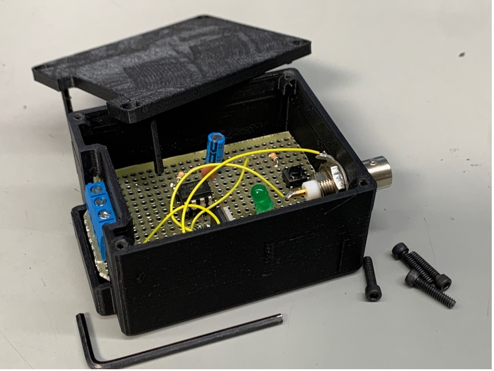
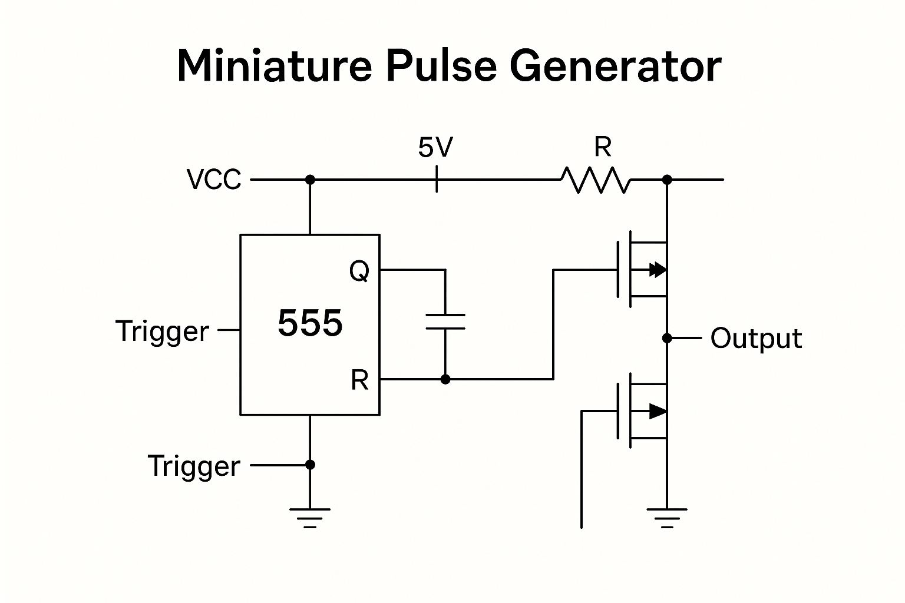

Miniature Pulse Generator – DCX Chol Prototype
Designed for low-latency pulse generation and logic inversion using discrete analog components
While working at DCX Chol, I developed a compact pulse generator...
- 555 timer configured in one-shot mode
- djustable resistor-capacitor timing network
- Single pulse triggered on rising-edge input
- Output duration: tunable from 10 µs to 1 second
- Logic Inversion Stage:
- Two MOSFETs wired in series — one N-channel, one P-channel
- Acts as a non-buffered logic inverter
- Ensures clean signal flip with high switching speed and low propagation delay
- Used to test the response of reverse-polarity tolerant inputs

Output Stage
- Clean, fast rise/fall edges suitable for triggering logic circuits
- Output drive current: up to 100 mA (suitable for small load tests)
- Signal available via screw terminals or test pins

Use Case at DCX Chol
- Test digital line filtering, debounce, and EMI rejection in cable harnesses
- Validate microcontroller interrupt inputs and external clock capture lines
- Simulate power-on glitches and transient control signals during QA
Significance
Despite its simplicity, the project emphasized fast prototyping, clean analog design, and logical signal flow control using no microcontrollers — a practical, field-ready tool in an analog-dominated QA workflow.